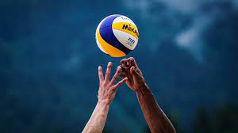
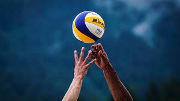
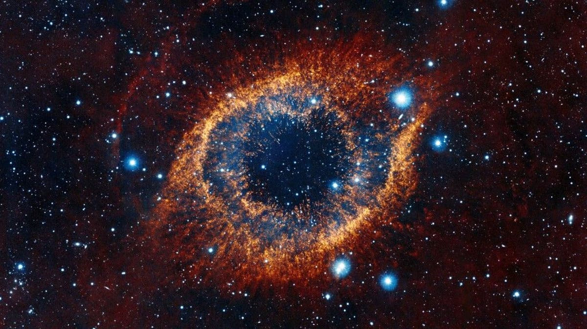
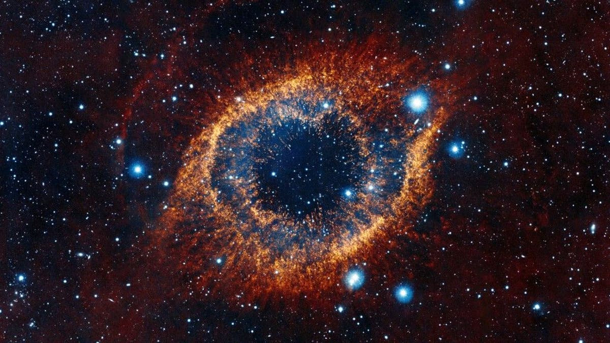

¿Qué intereses tengo?
 


Me gustan muchas cosas bastante variadas; particularmente tengo un gran gusto por la programación, las matemáticas, el dibujo y cabe mencionar que tengo un gran deseo de aprender robótica, aunque lastimosamente no tengo el placer de conocer mucho sobre esa área, pero espero hacerlo pronto.
Entre algunas otras cosas podría mencionar también la música (no puedo tocar ningún instrumento, pero toda la lógica y teoría detrás de el funcionamiento de ella me parece un tema excepcional), también dentro de mis intereses en cuanto a deportes podría mencionar que me llama mucho la atención el basketball, el volleyball y en una mucho menor proporción, el fútbol (soccer).
También me veo muy atraído por temas como el universo, la física, historia, y muchas otras áreas de las ciencias que estudian el funcionamiento de nuestro mundo y universo, así como también aquellas que indagan en nuestro pasado y buscan explorar nuevos horizontes.
Entre algunas otras cosas podría mencionar también la música (no puedo tocar ningún instrumento, pero toda la lógica y teoría detrás de el funcionamiento de ella me parece un tema excepcional), también dentro de mis intereses en cuanto a deportes podría mencionar que me llama mucho la atención el basketball, el volleyball y en una mucho menor proporción, el fútbol (soccer).
También me veo muy atraído por temas como el universo, la física, historia, y muchas otras áreas de las ciencias que estudian el funcionamiento de nuestro mundo y universo, así como también aquellas que indagan en nuestro pasado y buscan explorar nuevos horizontes.
 
